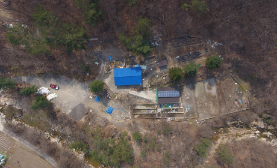
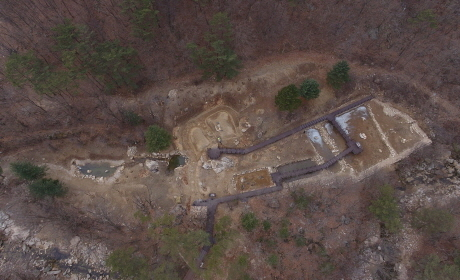

사업목적 :송계계곡 상부의 지속적인 수질오염 발생을 초래한 환경저해시설철거 및 생태계 복원을 통한 생태계 건강성 회복
사업목적 :송계계곡 상부의 지속적인 수질오염 발생을 초래한 환경저해시설철거 및 생태계 복원을 통한 생태계 건강성 회복- 사업기간 :2019. 5. ~ 2020. 12.
- 위 치 :충북 충주시 수안보면 미륵리 168번지 일원
- 사업내용 :소생물서식습지, 이끼생태원 조성 및 수목식재
-

사업 전
-

사업 후
송어 양식장 복원지
사업목적 :송계계곡 상부의 지속적인 수질오염 발생을 초래한 환경저해시설철거 및 생태계 복원을 통한 생태계 건강성 회복 사업기간 :2019. 5. ~ 2020. 12. 위 치 :충북 충주시 수안보면 미륵리 168번지 일원 사업내용 :소생물서식습지, 이끼생태원 조성 및 수목식재사업 전
사업 후